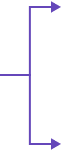

Posição relativa entre reta e plano
Para uma reta e um plano há três possibilidades, que são: reta contida no plano, reta paralela ao plano ou reta e plano transversais.
A seguir iremos ver esses casos e como podemos identificá-los algebricamente.
1º Caso
Reta contida no plano
2º Caso
Reta paralela ao plano
3º Caso
Reta e plano transversais
Reta contida no plano
Resumo
Clique nos itens do fluxograma:
Verificar ângulo do vetor normal do plano em relação ao vetor diretor da reta

Ortogonais

Reta contida no plano

Ponto em comum entre reta e plano
Reta paralela ao plano
Não há ponto em comum entre reta e plano
Não ortogonais
Reta e plano transversais
Voltar